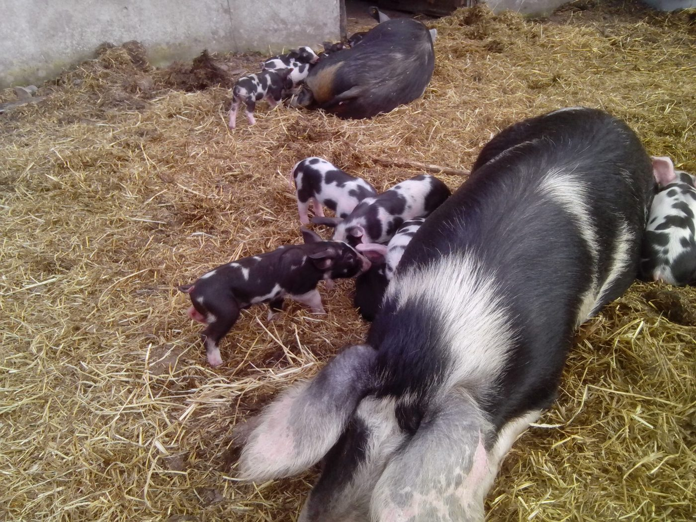
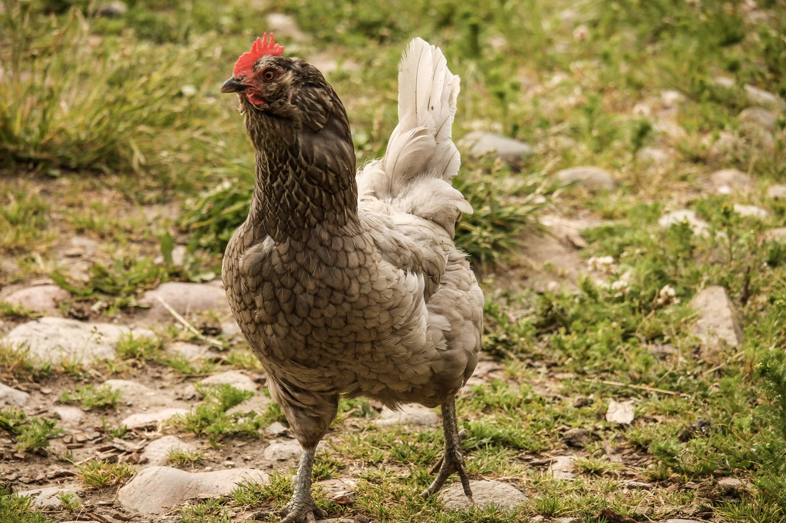
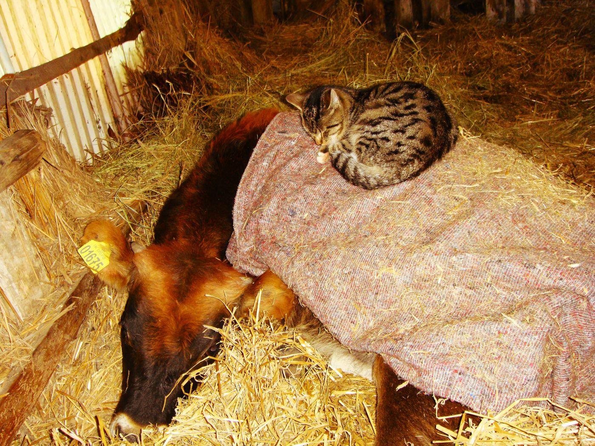

Jerseykøerne
Her på gården havde vi jerseykøer. Vi brugte dem ikke til at producere mælk, selvom jerseykoen er fremragende til det. Vi havde i stedet et par ammetanter, som var pensionerede malkekøer — de passede på deres egne kalve samt adopterede tyrekalve, som ikke havde værdi i mælkeproduktionen.
Ungtyrene blev slagtet, når de var ca. 1–2 år gamle, hvilket gav et mørt, saftigt og smagfuldt stykke kød. Vi kaldte det Hindsholm Beef.
Sortbroget Dansk Landrace
Vores grise var helt renracede Sortbroget Dansk Landrace (Danish Black Pied). De gik ude på marken og rodede i jorden, sådan som grise så gerne vil. Racen er, som grise var i gamle dage, inden man begyndte at lave eksportbacon i stor stil.
De voksede langsomt og blev ikke så store. Kødet var mørkt, saftigt og fuldt af smag — meget anderledes end almindeligt svinekød.


Høns og ænder
På gården havde vi også høns og ænder. Fjerkræ og æg blev ikke solgt i butikken, men kun via gårdens stalddørssalg. Ænderne, af racerne Rouen og Moskus, blev solgt til jul på bestilling.
Hønsene blev brugt både til kød og æg — blandt andet den franske race Faverolles, Maraner, engelske Araucana og grønlæggere, hvilket gav en smuk blanding af lyserøde, mørkebrune, lyseblå og grønne æg.
Kattene & Ellie
Udover de dyr, som indgik i produktionen, havde vi på gården også et vekslende antal katte, som alle var "ansat" med kost og logi — deres arbejde bestod i at holde bestanden af mus mm. nede, hvilket de gjorde yderst professionelt.
Hunden Ellie holdt et åbent øje med alt, hvad der foregik på gården. Hun var en glad og godmodig hund, der elskede katte og høns.
